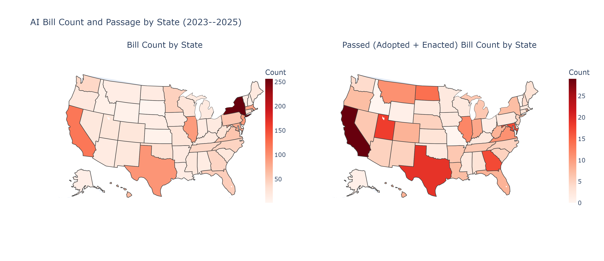
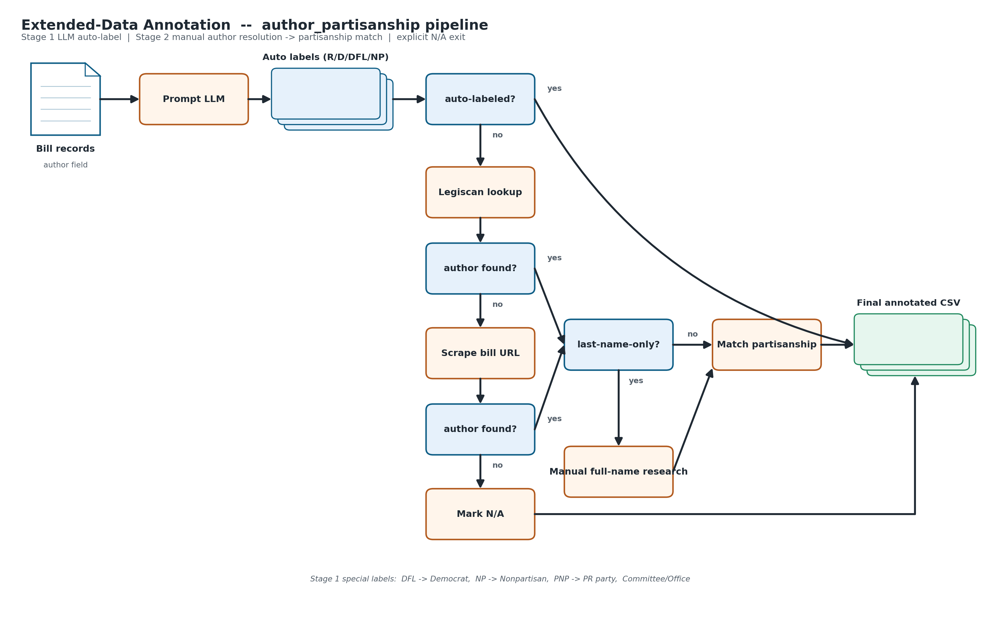
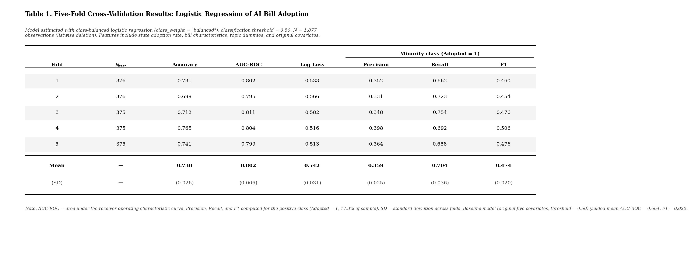
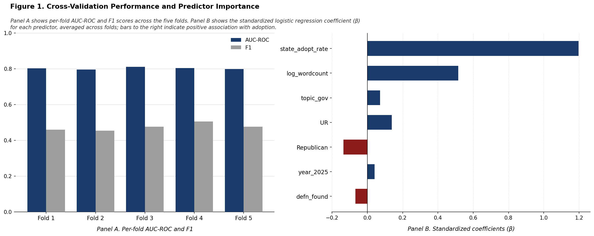
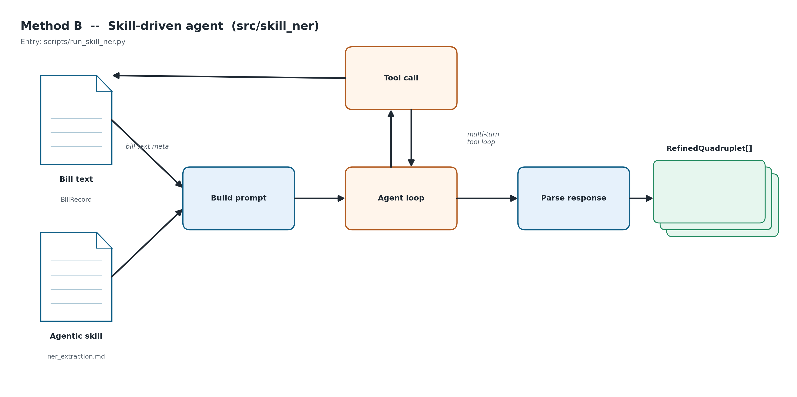
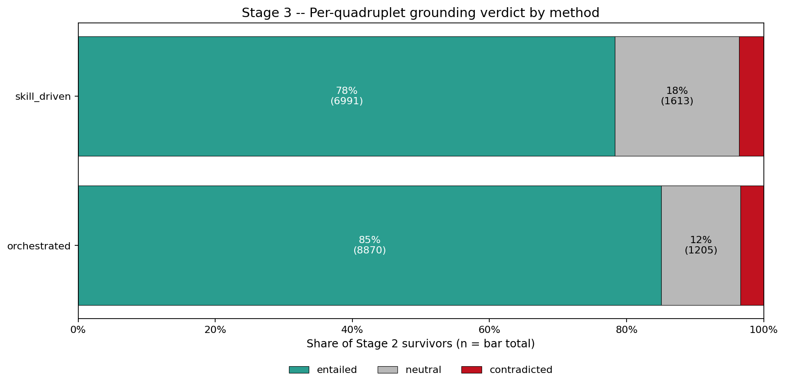
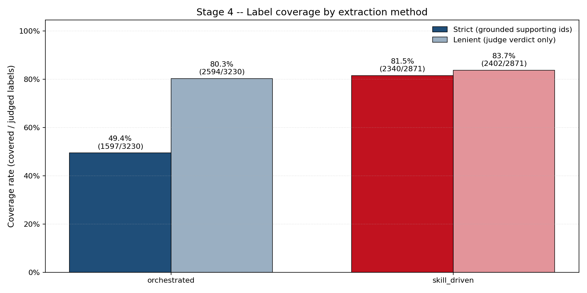
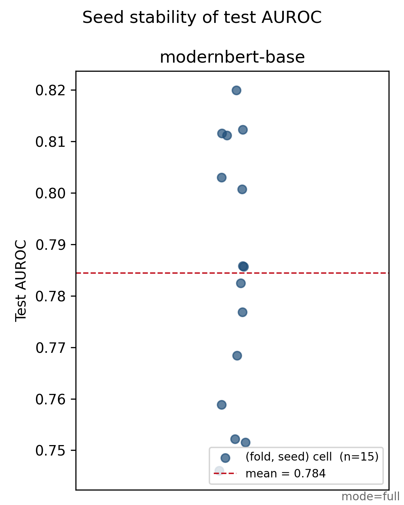
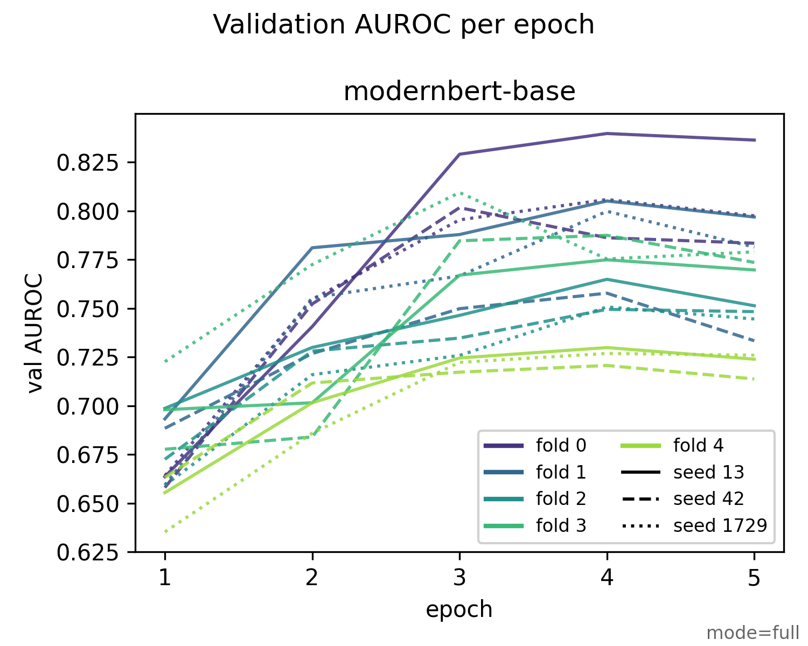

AI Policy Outcome Prediction
EPPS 6323 Knowledge Mining Final Report
Project Introduction
Project Recap
U.S. states have introduced a dramatic wave of AI-related legislation in recent years
yet only a small fraction of these bills ultimately become law.
Understanding which bills succeed requires moving beyond aggregate adoption counts.
- Partisanship;
- Economic conditions;
- Regulation mechanisms and transparency;
State AI bill count by year

AI bill count and passage by state

Topic and entity-type distribution
Bill topics (NCSL labels)
Extracted entity types
AI bill sponsorship by party
.png)
Task Definition
Adopted LLM driven data mining methods for:
Data annotation
Data enrichment
Named Entity Recognition
Performance benchmarking
Question Answering AI Application with RAG
LLM-driven data annotation
Annotation pipeline

Annotation Results
- Democrat: 953
- Republican: 508
- Committee: 314 (all committee/office/body authors, including the previously blank ones)
- Bipartisan: 84
- Nonpartisan: 18 (Nebraska unicameral + existing entries)
Baseline model construction
Baseline Model — Target & Features
Target
adopted = 1if status starts with “Enacted” or “Adopted”
Features
state_adopt_rate— per-state historical adoption ratelog_wordcount— log(summary word count + 1)topic_gov— topics contains “Government Use”UR— state_partisanship == “Republican”Republican— author_partisanship == “Republican”year_2025— year == 2025defn_found— summary contains definition-related keywords
Baseline Model — Specification
- Logistic Regression,
class_weight = "balanced", threshold = 0.50 - 5-fold stratified CV,
StandardScalerper fold
Cross-validation results

Per-fold performance and predictor importance

Granular entity extraction
Extraction Quadruplets with Evidence Spans
| Key | Value |
|---|---|
| entity | what / who is regulated |
| type | category of the entity |
| attribute | regulatory mechanism (mandate, prohibition, disclosure, …) |
| value | specific content of that mechanism |
- Every field is anchored to a verbatim evidence span drawn from the bill text — traceability is a hard contract, not a hint
- No fine-tuning, no pre-defined taxonomy
Multi-Turn NER Workflow

Skill-Driven Agent NER Workflow

Evaluation: Four LLM-as-Judge Tests




Fine-tuned model
Fine-tuning Model Specification
- Model:
answerdotai/ModernBERT-base(encoder; HF Trainer +WeightedLossTrainer) - Sequence length:
max_length = 1024, covers 91% of rows fully - Sweep: K = 5 folds × S = 3 seeds (13, 42, 1729) = 15 cells; early-stopping patience 2 on
val_auroc - Optimizer: AdamW,
lr = 2.0e-5,weight_decay = 0.01,warmup_ratio = 0.06, bf16 - Class weighting: inverse-frequency weights for unbalanced classes
Fine-tuning Results

- Mean test AUROC = 0.784 across 15 cells (5 folds × 3 seeds)
- Range across cells: ≈ 0.75 – 0.82
- Tight distribution — not a single-fold artifact
Fine-tuning Results

Convergence around epochs 3–4, then a small slow decay — early-stopping (patience 2) on val_auroc catches it. Spread across folds is the dominant source of variance, not seed.
Baseline vs Fine-tune
| Metric | Baseline (LR, 7 features) | ModernBERT-base (fine-tuned) |
|---|---|---|
| Mean test AUROC | 0.802 | 0.784 |
| Aggregation | 5-fold CV | 5 folds × 3 seeds = 15 cells |
| Inputs | 7 hand-crafted features | title + summary + entities text + 5 metadata fields |